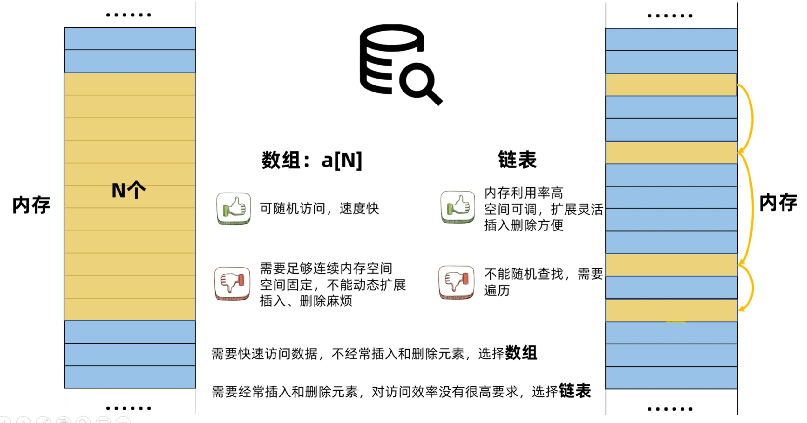

1. 使用数组和链表的区别
数组需要一大串连续的空间
链表需要把空闲的空间串联起来就好了

2. 链表分类

3. 双向循环链表的插入与删除
3.1 插入

3.2 删除

4. 代码实现
4.1 定义结点和链表

4.2 初始化结点和链表

注意：链表头，里面有2个数据，一个就是有多少个链表项，另外一个就是根节点，一开始的时候，根节点也是一个节点，自己指向自己。
4.3 插入结点ListNode


4.4 删除结点ListNode

4.4 汇总代码
/*
lesson6：链表
*/
/*------------------------1.链表和结点的定义----------------------------*/
/*结点结构体*/
typedef struct LIST_NODE {
int data; /*用于存放结点数据*/
struct LIST_NODE *pxNext; /*用于指向下一个结点*/
struct LIST_NODE *pxPrevious; /*用于指向上一个结点*/
}ListNode;
/*链表结构体*/
typedef struct LIST {
unsigned int NumberOfNodes; /*用于记录链表结点数量*/
ListNode RootNode; /*用于作为循环链表的参考点*/
}List;
/*------------------------2.链表和结点的初始化---------------------------*/
/*结点初始化*/
void ListInitialiseItem(ListNode *pxListNode, int value)
{
pxListNode->data = value; /*结点数据赋值*/
}
/*链表初始化*/
void ListInitialise(List *pxList)
{
pxList->RootNode.pxNext = &(pxList->RootNode); /*由于此时链表中没有结点,第一个结点指向自己*/
pxList->RootNode.pxPrevious = &(pxList->RootNode); /*由于此时链表中没有结点,第一个结点指向自己*/
pxList->NumberOfNodes = 1; /*链表结点计数初始化为1,也就是只有一个根结点*/
}
/*------------------------3.1结点插入链表---------------------------*/
void ListInsertEnd(List *pxList, ListNode *pxInsertListNode)
{
ListNode *pxNextNode = &(pxList->RootNode); /*插入结点的后结点*/
ListNode *pxPreviosNode = pxList->RootNode.pxPrevious; /*插入结点的前结点*/
pxInsertListNode->pxNext = pxNextNode; /*插入结点指向后结点*/
pxInsertListNode->pxPrevious = pxPreviosNode; /*插入结点指向前结点*/
pxPreviosNode->pxNext = pxInsertListNode; /*前结点指向插入结点*/
pxNextNode->pxPrevious = pxInsertListNode; /*后结点指向插入结点*/
(pxList->NumberOfNodes)++; /*链表结点计数加1*/
}
/*------------------------3.2链表删除结点---------------------------*/
void ListRemove(List *pxList, ListNode *pxIListToRemove)
{
ListNode *pxPreviosNode = pxIListToRemove->pxPrevious; /*删除结点的前结点*/
ListNode *pxNextNode = pxIListToRemove->pxNext; /*删除结点的后结点*/
pxNextNode->pxPrevious = pxPreviosNode; /*后结点指向前结点*/
pxPreviosNode->pxNext = pxNextNode; /*前结点指向后结点*/
(pxList->NumberOfNodes)--; /*链表结点计数减1*/
}
int main(void)
{
/*1.定义链表、结点*/
List list; //定义链表
ListNode list_node1; //定义结点1
ListNode list_node2; //定义结点2
/*2.初始化链表、结点*/
ListInitialise(&list);
ListInitialiseItem(&list_node1, 100);
ListInitialiseItem(&list_node2, 200);
/*3.插入链表*/
ListInsertEnd(&list, &list_node1);
ListInsertEnd(&list, &list_node2);
/*4.删除结点*/
ListRemove(&list, &list_node1);
return 0;
}
5.课后问答